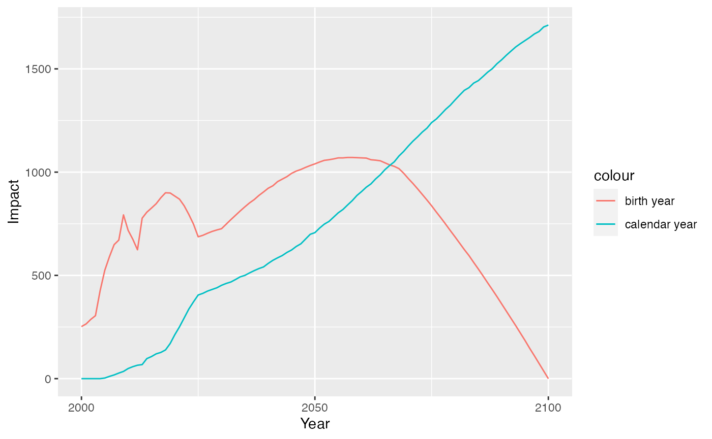
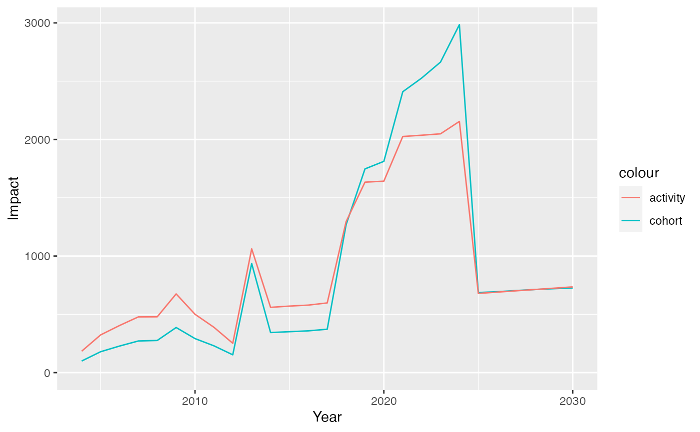

using-vimpact.RmdThis vignette describes how to use impact calculation methods used in VIMC as an external user.
The simplest possible example is a static model with constant routine immunisation and a one-off campaign. Burden estimates from a theoretical country are found in 3 csv titled example_novax_burden.csv, example_routine_burden.csv and example_routine_campaign_burden.csv. These include estimates of burden in years 1900 - 2100 and display the format used by the functions.
example_novax <- read.csv(system.file("extdata/example_novax_burden.csv", package = "vimpact"))
example_routine <- read.csv(system.file("extdata/example_routine_burden.csv", package = "vimpact"))
example_routine_campaign <- read.csv(system.file("extdata/example_routine_campaign_burden.csv", package = "vimpact"))
str(example_novax)
#> 'data.frame': 10201 obs. of 6 variables:
#> $ country : chr "ABC" "ABC" "ABC" "ABC" ...
#> $ year : int 2000 2000 2000 2000 2000 2000 2000 2000 2000 2000 ...
#> $ age : int 0 1 2 3 4 5 6 7 8 9 ...
#> $ value : int 16 15 14 13 13 12 12 11 11 10 ...
#> $ activity_type : chr "novax" "novax" "novax" "novax" ...
#> $ burden_outcome: chr "deaths" "deaths" "deaths" "deaths" ...
str(example_routine)
#> 'data.frame': 10201 obs. of 6 variables:
#> $ country : chr "ABC" "ABC" "ABC" "ABC" ...
#> $ year : int 2000 2000 2000 2000 2000 2000 2000 2000 2000 2000 ...
#> $ age : int 0 1 2 3 4 5 6 7 8 9 ...
#> $ value : int 16 15 14 13 13 12 12 11 11 10 ...
#> $ activity_type : chr "routine" "routine" "routine" "routine" ...
#> $ burden_outcome: chr "deaths" "deaths" "deaths" "deaths" ...
str(example_routine_campaign)
#> 'data.frame': 10201 obs. of 6 variables:
#> $ country : chr "ABC" "ABC" "ABC" "ABC" ...
#> $ year : int 2000 2000 2000 2000 2000 2000 2000 2000 2000 2000 ...
#> $ age : int 0 1 2 3 4 5 6 7 8 9 ...
#> $ value : int 16 15 14 13 13 12 12 11 11 10 ...
#> $ activity_type : chr "campaign" "campaign" "campaign" "campaign" ...
#> $ burden_outcome: chr "deaths" "deaths" "deaths" "deaths" ...Impact by calendar year calculates impact accrued over all ages for a specific year. This calculates the difference in disease burden between baseline and focal scenarios for a given year.
To use this method you need to provide a data frame of baseline impact and a data frame of focal impact for the vaccine of interest for a given age, year and country.
These data frames must contain columns for country, burden_outcome (e.g. cases, deaths, DALYs), year, age and value. It will sum the values over all ages for each year and return the impact as the difference between baseline and focal scenarios for each group.
If the baseline and focal impact data contains groups which do not overlap then this will return impact only for groups contained in both datasets.
calendar_year <- vimpact::impact_by_calendar_year(baseline_burden = example_novax, focal_burden = example_routine_campaign)
str(calendar_year)
#> tibble [101 × 4] (S3: tbl_df/tbl/data.frame)
#> $ country : chr [1:101] "ABC" "ABC" "ABC" "ABC" ...
#> $ burden_outcome: chr [1:101] "deaths" "deaths" "deaths" "deaths" ...
#> $ year : int [1:101] 2000 2001 2002 2003 2004 2005 2006 2007 2008 2009 ...
#> $ impact : int [1:101] 0 0 0 0 0 3 11 18 27 35 ...When calculating impact by birth year we account for the long-term impact of vaccination by finding the sum of the difference in burden between focal and baseline scenarios over the lifetime of a particular cohort. This can be written as \(D(c, k) = \sum_{y-a=k}D_{b-f}(a, c, y)\) where \(y \in Y_{m}\) and \(a \in A_{m}\) where \(D\) is the difference in burden, \(b\) is baseline, \(f\) is focal, \(a\) is age, \(c\) is country, \(y\) is year, \(k\) is birth cohort, \(Y_{m}\) are the years modelled and \(A_{m}\) are the ages modelled. This requires the same data as impact_by_calendar_year. You need to provide data frames containing baseline and focal impact for the vaccine of interest for a given age, year and country.
These data frames must contain columns for country, burden_outcome (e.g. cases, deaths, DALYs), year, age and value. It will sum the impact grouped by country, burden_outcome, and birth year. Where birth year is year - age. Then calculates the impact for these groups.
If the baseline and focal impact data contains groups which do not overlap then this will return impact only for groups contained in both datasets.
birth_year <- vimpact::impact_by_birth_year(baseline_burden = example_novax, focal_burden = example_routine_campaign)
str(birth_year)
#> tibble [201 × 4] (S3: tbl_df/tbl/data.frame)
#> $ country : chr [1:201] "ABC" "ABC" "ABC" "ABC" ...
#> $ burden_outcome: chr [1:201] "deaths" "deaths" "deaths" "deaths" ...
#> $ birth_cohort : int [1:201] 1900 1901 1902 1903 1904 1905 1906 1907 1908 1909 ...
#> $ impact : int [1:201] 0 0 0 0 0 0 0 0 0 0 ...
birth_year$year <- birth_year$birth_cohort
birth_year$impact_birth_year <- birth_year$impact
calendar_year$impact_calendar_year <- calendar_year$impact
plot_data <- merge(birth_year, calendar_year, by = c("country", "burden_outcome", "year"))
plot_data$year <- as.Date(paste(plot_data$year, "01", "01", sep = "-"))
ggplot2::ggplot(plot_data, ggplot2::aes(x = year)) +
ggplot2::geom_line(ggplot2::aes(y = impact_birth_year, colour = "birth year")) +
ggplot2::geom_line(ggplot2::aes(y = impact_calendar_year, colour = "calendar year")) +
ggplot2::expand_limits(y = 0) +
ggplot2::ylab("Impact") +
ggplot2::xlab("Year")
The final view of impact is by attributing it to the year in which vaccination took place. Impact by year of vaccination methods are vital for determining the long-term impact of of vaccination due to activities carried out in a particular year. We obtain the impact ratio as the impact attributable per fully vaccinated person (FVP) calculated as the coverage × cohort size. This ratio can be stratified by different characteristics, such as birth cohort in order to catch temporal changes in transmission or healthcare or by activity type to capture the differing effects of routine and campaign vaccination. The impact ratio allows effects due to a particular year’s worth of vaccination to be attributed to that year.
To calculate impact by year of vaccination with impact ratio stratified by activity type use function impact_by_year_of_vaccination_activity_type. You need to provide 3 data frames. Like the previous two impact methods this needs a data frame of baseline impact and focal impact. These must contain the same columns as in the previous two methods with the addition of a column for the activity_type of the vaccination - either routine or campaign.
You also need to provide a data frame of FVP (fully vaccinated person) data which contains country, year, activity type, age and fvp. And a set of vaccination_years which is a range of years for which you want calculate impact for. This will be used to filter the baseline impact, focal impact and FVPs.
This method produces impact values for a particular disease stratified by country, activity type, year and burden outcome.
example_fvps <- read.csv(system.file("extdata/example_fvps.csv", package = "vimpact"))
routine <- vimpact::impact_by_year_of_vaccination_activity_type(baseline_burden = example_novax, focal_burden = example_routine, fvps = example_fvps[example_fvps$activity_type == "routine",], 2000:2030)
campaign <- vimpact::impact_by_year_of_vaccination_activity_type(baseline_burden = example_routine, focal_burden = example_routine_campaign, fvps = example_fvps[example_fvps$activity_type == "campaign",], 2000:2030)
activity_type <- rbind(routine, campaign)
str(activity_type)
#> tibble [35 × 8] (S3: tbl_df/tbl/data.frame)
#> $ country : chr [1:35] "ABC" "ABC" "ABC" "ABC" ...
#> $ vaccine : chr [1:35] "YF" "YF" "YF" "YF" ...
#> $ activity_type : chr [1:35] "routine" "routine" "routine" "routine" ...
#> $ year : int [1:35] 2004 2005 2006 2007 2008 2009 2010 2011 2012 2013 ...
#> $ burden_outcome: chr [1:35] "deaths" "deaths" "deaths" "deaths" ...
#> $ impact : num [1:35] 184 323 404 478 479 ...
#> $ impact_ratio : num [1:35] 0.168 0.168 0.168 0.168 0.168 ...
#> $ fvps : int [1:35] 1090 1919 2397 2838 2842 4008 2971 2310 1494 2996 ...Impact by year of vaccination can be stratified by birth cohort to catch temporal changes in transmission or healthcare. This method is invariant to vaccination activity type. However, vaccine effect is assumed to vary over time through birth cohorts.
This method requires basline impact, focal impact and FVPs disaggregated by country, burden outcome, year and age. The data doesn’t have to be disaggregated by activity_type. This returns impact for a particular vaccine by country, year and burden outcome.
cohort_type <- vimpact::impact_by_year_of_vaccination_birth_cohort(baseline_burden = example_novax, focal_burden = example_routine_campaign, fvps = example_fvps, 2000:2030)
str(cohort_type)
#> tibble [35 × 7] (S3: tbl_df/tbl/data.frame)
#> $ country : chr [1:35] "ABC" "ABC" "ABC" "ABC" ...
#> $ year : int [1:35] 2013 2018 2019 2020 2021 2022 2023 2024 2004 2005 ...
#> $ burden_outcome: chr [1:35] "deaths" "deaths" "deaths" "deaths" ...
#> $ vaccine : chr [1:35] "YF" "YF" "YF" "YF" ...
#> $ activity_type : chr [1:35] "campaign" "campaign" "campaign" "campaign" ...
#> $ impact : num [1:35] 619 868 1314 1348 1891 ...
#> $ fvps : int [1:35] 9987 12378 18313 18310 25002 24999 24997 26681 1090 1919 ...
activity_sum <- stats::aggregate(impact ~ country + year + burden_outcome,
activity_type, sum)
cohort_sum <- stats::aggregate(impact ~ country + year + burden_outcome,
cohort_type, sum)
activity_sum$impact_activity_strat <- activity_sum$impact
cohort_sum$impact_cohort_strat <- cohort_sum$impact
plot_data <- merge(activity_sum, cohort_sum, by = c("country", "burden_outcome", "year"))
plot_data$year <- as.Date(paste(plot_data$year, "01", "01", sep = "-"))
ggplot2::ggplot(plot_data, ggplot2::aes(x = year)) +
ggplot2::geom_line(ggplot2::aes(y = impact_cohort_strat, colour = "cohort")) +
ggplot2::geom_line(ggplot2::aes(y = impact_activity_strat, colour = "activity")) +
ggplot2::expand_limits(y = 0) +
ggplot2::ylab("Impact") +
ggplot2::xlab("Year")
All definitions and terminology can be found in the associated manuscript available at: https://www.medrxiv.org/content/10.1101/2021.01.08.21249378v1.full-text ; we include a summary below.
FVP - Fully vaccinated person
Focal scenario - The vaccination scenario to be assessed in comparison to a baseline scenario
Baseline scenario - The vaccination scenario to be compared against, often the situation without any vaccination (no-vac)
Impact- The effect of vaccination often measure in deaths or cases averted and calculated as the difference in burden between a focal scenario and a baseline scenario
Impact ratios - The impact per fully vaccinated person